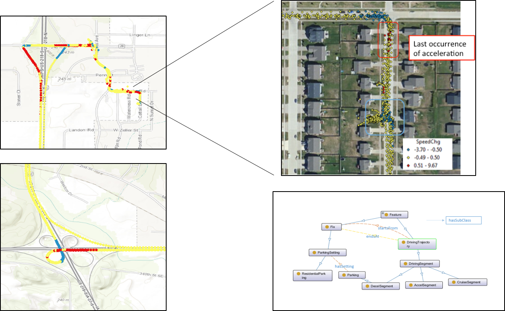
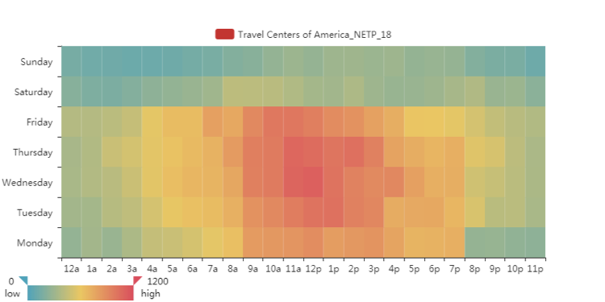
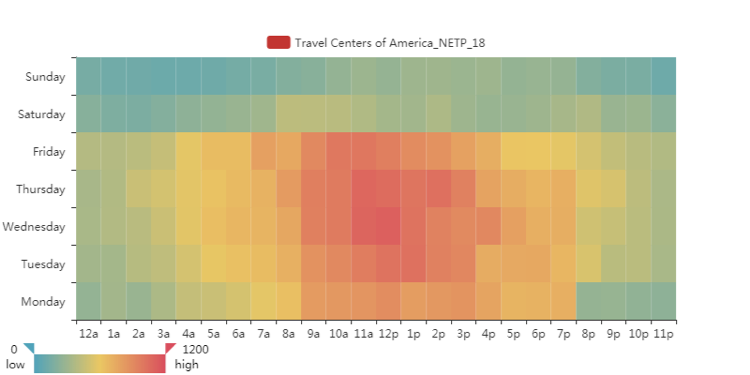
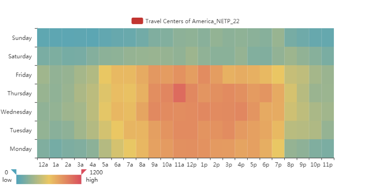
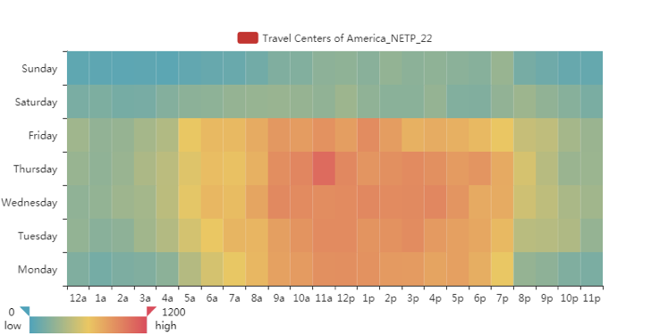
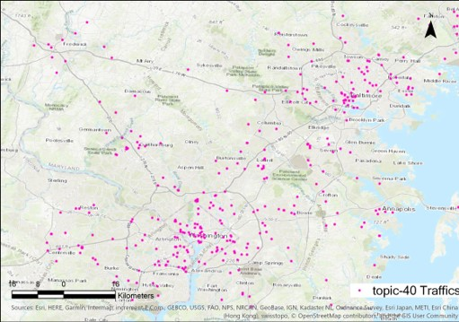
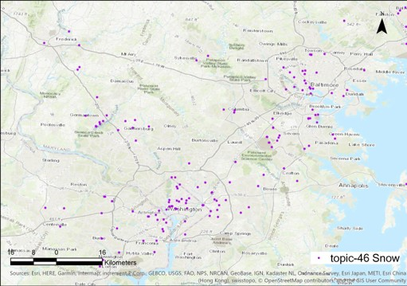
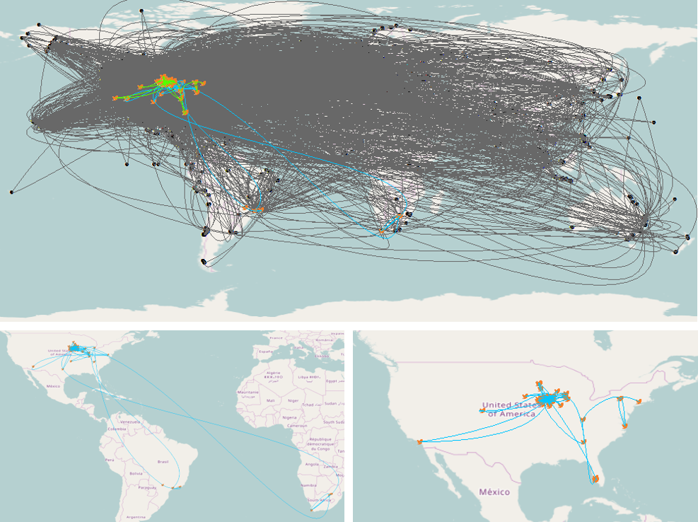
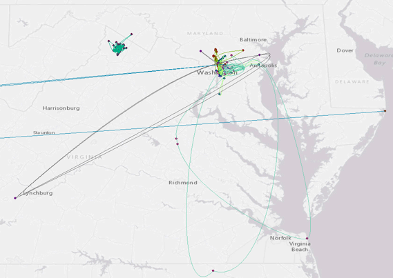

Innovations in Geospatial Information Science: Understanding Human Mobility and More
Center for Geospatial Information Science
Equipped with state-of-art big geospatial data computing platforms, researchers from the CGIS conduct research in
- human mobility modeling
- big movement data analytics
- place-based analytics
- 3D geovisualization
- geospatial semantic modeling
We develop innovative approaches to retrieve, model and visualize human mobility patterns from diverse data sources (e.g., large scale vehicle GPS trajectories, location-based social media, and human activity logs)


INRIX trajectory data
Collected using GPS trackers (embedded GPS)and mobile devices (using an app)
GPS waypoints with unique ID on each trip
Four months of data from 2015
February (3,565,361 trips, 398,652,043 waypoints);
June (4,835,882 trips, 152,604,037 waypoints);
July (4,868,583 trips, 100,246,683 waypoints);
October (6,420,576 trips, 725,217,440 waypoints)

Passenger Vehicle Trajectories

Truck Fleet Trajectories

 

Travel Center of America 18
 

Travel Center of America 22



Activity spaces of students on a campus

Sample activity spaces from D.C.
Dr. Kathleen Stewart , Director
Email: stewartk@umd.edu